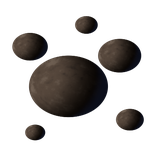

SYSTÈME · CINIS
Empire
Puissance2 5891er au classement
Production115k/het 53k/h de cristal
Mondes2tenus · 2 à prendre

Ton premier monde
Cinis II
Cinis · 2
Anomalie profonde · Permet d'y bâtir un puits géothermiqueLa terre brûlée · Réduit de 25 % sa place pour bâtir
Métal112k/h
entrepôt plein
Cristal53k/h
silo plein
Énergie100 %
973 sur 1,2k
Emplacements76/ 132
56 libres
Défenses8en batterie
Flotte10à quai
À quai1711
La grue est libre

Ta colonie
Cinis IV
Cinis · 4 · doctrine Chantier · terraformeur 2 sur 4
Anneaux larges · Permet d'y bâtir un chantier spatialLes lunes de garde · Réduit de 15 % la durée de ses chantiersLoin de l'étoile · Réduit de 15 % l'énergie de ses centralesSans sol · Réduit de 10 % sa place pour bâtir
Métal3,2k/h
entrepôt plein
Cristal0/h
0 / 7k
Énergie100 %
66 sur 151
Emplacements9/ 122
113 libres
Défenses0en batterie
Flotte0à quai
La grue est libre

Prise au Cafard
La ceinture2 foreuses sur 3 · la suivante : 1M de métal
/h 9k/h· dans la production de Cinis II
À prendre 2

Cinis III
Cinis · 3
Après la Colonisation avancée

Cinis I
Cinis · 1
Le Cafard y tient encore sa base
La forge du jour